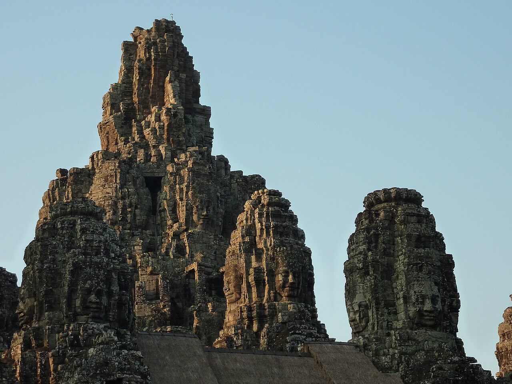

Day 6바욘 사원의 수많은 미소, 그 주인공은 누구일까 — 자야바르만 7세
오늘의 질문: 바욘 사원의 수많은 돌 얼굴은 누구의 얼굴일까요?읽는 시간 약 10분·인물
- 바욘 사원을 세운 자야바르만 7세는 1177년 참파 함대의 공격 뒤 반격에 나섰고, 1181년 왕위에 올랐어요.
- 돌에 새긴 기록 가운데 1186년 타프롬 비문에는 병원 102곳이, 1191년 프레아칸 비석에는 길 위의 쉼터 '불의 집' 121곳이 기록돼 있어요.
- 바욘의 수많은 얼굴이 누구인지는 하나로 정해지지 않았어요. 관세음보살, 왕 자신 등으로 해석이 갈려요 논쟁 있음.
표시가 없는 숫자는 확인된 값이에요. 자료마다 다르거나 어림한 값에만 추정·논쟁 있음을 붙였어요.
어제 퀴즈 정답 1번 X · 2번 ② · 3번은 단톡방에서 이야기해요
카드로 보기
카드를 누르면 크게 볼 수 있어요.


무너진 수도로 돌아온 사람
돌로 쌓은 탑 사이를 걷다가 고개를 들면, 커다란 얼굴이 사방에서 미소 지으며 내려다봐요. 앙코르톰(성벽으로 둘러싼 옛 도시) 한가운데에 있는 바욘 사원이에요. 이 미소는 누구의 것이고, 누가 이 사원을 세웠을까요?

이 사원을 세운 왕은 자야바르만 7세예요. 그는 1181년에 왕이 되어 1218년경까지(자료에 따라 1215~1219년) 나라를 다스렸어요 논쟁 있음. 바욘은 그가 세운 앙코르톰의 한가운데에 12세기 말에서 13세기 초 사이에 지어졌어요. 오늘은 이 한 사람의 삶을 따라가며 미소의 주인공을 찾아봐요.
1177년, 호수를 거슬러 온 함대
그가 역사에 크게 등장한 것은 수도가 공격받은 뒤였어요. 1177년, 참파(오늘날 베트남 중부에 있던 나라)의 함대가 메콩강과 톤레삽을 거슬러 올라 앙코르를 공격했어요. 수도가 큰 피해를 입었고 당시 왕이 숨졌다고 전해져요 추정. 참파의 점령은 몇 해 이어졌어요 추정.
그 뒤 그는 군을 이끌고 반격했고, 1181년 왕위에 올랐어요. 바욘의 회랑(건물을 둘러싼 긴 복도) 벽에는 호수 위에서 크메르군과 참군이 싸우는 장면이 새겨져 있어요. 다만 그 장면이 정확히 어느 전투를 그린 것인지는 단정하기 어려워요 논쟁 있음.
그렇다고 한쪽만 쳐들어간 이야기는 아니에요. 앙코르와 참파는 서로 공격을 주고받았어요. 1145년에는 앙코르가 참파의 수도를 공격했고, 1190년경에는 자야바르만 7세 쪽이 참파의 수도 비자야를 공격해 점령했다고 해요 추정. 그 뒤 한동안 참파의 상당 부분이 앙코르의 영향 아래 있었어요 논쟁 있음.
참파 출신 왕자가 앙코르 편에서 싸웠다는 서술도 있어요 추정. 두 나라 사이가 적과 우리 편으로 깔끔하게 나뉘지 않았다는 뜻이에요.
| 연도 | 일 | 확신도 |
|---|---|---|
| 1145 | 앙코르가 참파의 수도 비자야를 공격 | 추정 |
| 1177 | 참파 함대가 메콩강·톤레삽을 거슬러 앙코르를 공격 | 확실 |
| 1181 | 자야바르만 7세가 왕위에 오름 | 확실 |
| 1186 | 어머니를 위해 타프롬 사원을 바침 | 확실 |
| 1190년경 | 자야바르만 7세 쪽이 참파의 수도 비자야를 공격해 점령 | 추정 |
| 1191 | 아버지를 기리는 프레아칸 사원을 바침 | 확실 |
| 1218년경 | 세상을 떠남(자료에 따라 1215~1219년) | 논쟁 있음 |
사원 곁에 세운 병원과 쉼터
왕의 곁에는 두 왕비가 있었어요. 첫 왕비 자야라자데비는 독실한 불교도였다고 전해지고, 왕비가 세상을 떠난 뒤 왕은 그 언니 인드라데비와 결혼했어요.
자야바르만 7세는 대승불교(관세음보살 같은 보살을 모시는 불교의 한 갈래)를 받들어 사원과 병원을 세웠어요. 1186년에는 어머니를 위해 타프롬 사원을, 1191년에는 아버지를 기리는 프레아칸 사원을 바쳤어요. 그렇다고 힌두 전통이 끊긴 것은 아니에요. 같은 시기에 힌두교 신상도 만들어졌고, 바욘에는 두 전통의 조각이 함께 보여요.
비문이 기록한 병원 102곳
이 왕이 남긴 기록 가운데 눈에 띄는 것은 병원이에요. 1186년 타프롬 비문(돌에 새긴 글)에는 그가 세운 병원 102곳이 기록돼 있어요. 다만 지금 유적으로 위치가 확인된 것은 그 절반에도 못 미친다고 해요 논쟁 있음.
그렇다면 전쟁에서 이긴 왕은 왜 병원을 지었을까요? 그 목적은 병원 102곳을 기록한 타프롬 비문이 아니라, 또 다른 비문인 사이퐁 비문이 전해요. 여기에는 백성이 몸의 병을 앓으면 왕은 그것을 자기 병보다 더 아프게 여겼다는 취지의 구절이 있어요. 번역자마다 문구가 조금씩 달라서 뜻만 옮겼어요 논쟁 있음.
이 비문은 왕의 공덕을 기리는 글이에요. 그러니 왕의 속마음이 아니라, 비문이 병원을 세운 까닭을 그렇게 적었다는 데까지 읽어요.
고려 시대에도 백성의 병을 돌보던 기관이 있었어요. 대비원은 불교의 자비 정신에 바탕을 두고 세운 구호기관이었고, 혜민국은 백성의 질병을 고치려고 둔 관서였어요. 다만 대비원·혜민국은 수도 개경을 중심으로 몇 곳에 있었고, 비문이 전하는 앙코르의 병원은 102곳으로 규모와 퍼진 범위가 달라요. 어느 쪽이 더 낫다는 이야기가 아니라 방식이 달랐다는 뜻이에요.
길 위의 '불의 집' 121곳
손길은 길 위에도 닿았어요. 1191년 프레아칸 비석에는 길과 사원 경내에 세운 '불의 집'(vahni-griha) 121곳이 기록돼 있어요. 불의 집은 길가에 돌로 세운 작은 사당 건물이고, 그 주변에 여행자가 쉬어 가는 시설이 있었다고 해석돼요 추정.
쉼터 사이의 간격은 15㎞ 안팎으로 알려져 있는데, 길마다 조금씩 달라요 논쟁 있음. 15㎞는 어른 걸음으로 세 시간 남짓이에요(제작팀이 어림한 값이에요). 그래서 하루 길을 걷는 사람이 쉬어 가기 좋은 간격이었다고 해석돼요 추정.
미소의 주인공은 누구일까
다시 바욘의 얼굴 앞으로 돌아가 볼게요. 바욘의 탑들에 새긴 얼굴은 모두 합쳐 200개 남짓으로 알려져 있어요 논쟁 있음. 캄보디아 말로 미소는 ញញឹម(ñɔñɨm, 뇨늠)이라고 해요 추정.
답은 지금도 하나로 모이지 않아요 논쟁 있음. 관세음보살(자비를 상징하는 보살)이라는 해석은 프랑스의 앙코르 연구자 조르주 세데스 이래로 이어져 왔고, 왕 자신의 모습이라고 보는 학자도 많아요. 둘이 겹친다는 해석도 있어요.
연구자 피터 샤록은 탄트라 불교(불교의 한 흐름)의 부처로 봐요. 19세기 후반의 프랑스 연구자들은 브라흐마나 시바 같은 힌두 신으로 짐작하기도 했어요. 13세기 말 앙코르를 찾은 중국 사절 주달관은 얼굴이 부처를 나타낸다고 들었다고 해요.
어느 해석도 틀렸다기보다, 연구자들이 같은 얼굴에서 서로 다른 근거를 읽은 것이에요. 그래서 주인공을 하나로 단정할 수는 없어요. 다만 관세음보살이나 왕 자신의 자비로운 모습과 이어 읽는 해석이 자주 소개돼요 논쟁 있음.
그가 세상을 떠난 뒤에는 앙코르의 사원이 왕마다 후원하는 전통에 따라 여러 번 고쳐 쓰였고, 자야바르만 8세 시기에는 바욘의 불상 등 불교 조각이 훼손되고 일부 사원이 힌두 사원으로 바뀌었다고 해요. 불교에는 여러 갈래가 있어요. 그가 받든 것은 대승불교였고, 이후 앙코르에서는 상좌부 불교(대승과는 다른 불교의 한 갈래)가 자리 잡았다고 서술돼요 추정. 오늘날 캄보디아의 불교 이야기는 종교 회차에서 이어 가요.
이 왕이 남긴 많은 건축은 평가가 갈려요. 큰 공사에 많은 사람의 노동이 들었을 것이고 그것이 나라에 부담이 됐다고 보는 시각이 있어요. 반대로 병원과 쉼터처럼 백성을 위한 시설에 힘을 쏟았다는 점을 높이 사는 시각도 있어요. 어느 쪽도 숫자로 확인된 것은 아니에요 논쟁 있음.
| 항목 | 내용 | 확신도 | 출처 |
|---|---|---|---|
| 재위 | 1181년 즉위, 1218년경까지(자료에 따라 1215~1219년) | 즉위 확실, 끝 논쟁 있음 | 국립중앙박물관, Wikipedia(Jayavarman VII) |
| 앙코르와 참파의 공방 | 1145년 앙코르가 참파 수도 공격, 1177년 참파 함대가 앙코르 공격, 1190년경 자야바르만 7세 쪽이 비자야 점령, 그 뒤 20년 안팎(자료에 따라 최대 30년) 앙코르의 영향 아래 | 공방·1177 확실, 1145·1190년경 추정, 기간 논쟁 있음 | Wikipedia(Khmer–Cham wars, Battle of Tonlé Sap), EBSCO |
| 바욘 | 12세기 말~13세기 초, 앙코르톰 한가운데. 탑은 원래 49개로 적는 자료가 있고(건축가 쿠냉은 59개로 추정) 지금 37개. 얼굴은 모두 합쳐 200개 남짓(자료에 따라 216개) | 건립 확실, 탑·얼굴 수 논쟁 있음 | Wikipedia(Bayon, Angkor Thom), 한국어 위키백과(바이욘), Cambodia Daily |
| 얼굴의 주인공 | 관세음보살(세데스 이래), 왕 자신, 둘의 겹침, 탄트라 불교의 부처(샤록), 힌두 신(19세기 후반 연구자), 부처(13세기 말 주달관이 들은 말) | 논쟁 있음 | Wikipedia(Bayon), Cambodia Daily |
| 병원 | 1186년 타프롬 비문에 102곳 기록. 유적으로 확인된 것은 절반 미만 | 102곳 확실, 비문 이름 추정, 확인 수 논쟁 있음 | Wikipedia(Arogyasala), Archaeology(AIA), Medievalists.net |
| 병원을 세운 뜻 | 사이퐁 비문(K.368, 약 1186년)에 백성의 병고를 왕이 자기 병보다 더 아파했다는 취지. 타프롬 비문과는 다른 비문 | 취지·다른 비문 확실, 번역 문구 논쟁 있음 | DHARMA |
| 길 위의 쉼터 | 1191년 프레아칸 비석에 '불의 집' 121곳 기록, 간격 15㎞ 안팎(14.8~16.1㎞) | 121곳 확실, 간격 논쟁 있음 | Angkor Database(Hendrickson), Wikipedia(Dharmasala) |
| 크메르어 "네" | 남성 បាទ(baat), 여성 ចាស(caah). 말하는 사람의 성별에 따름 | 철자·쓰임 확실, 한글 발음 추정 | Wiktionary, SEAsite, FSI |
| 국립박물관 좌상 | 사암 좌상, 높이 약 138㎝, 여러 조각으로 발견돼 다시 맞춤 | 확실 | Angkor Database(Andy Brouwer) |
프놈펜에서 만나면
- 오늘 바로: 내가 쓸 "네"를 소리 내어 말해 보기. 남성은 바앗, 여성은 짜예요. 단톡방에 내가 쓸 "네"를 한글로 남겨 보세요.
- 국립박물관에서 왕의 좌상 만나기. 프놈펜 국립박물관에는 여러 조각으로 발견돼 다시 맞춘 자야바르만 7세의 사암 좌상이 있고, 오늘날 많은 캄보디아 사람에게 그는 자부심의 상징으로 이야기돼요 추정. 전시 여부와 관람 정보는 방문 전에 꼭 확인하세요.
- 바욘 얼굴 이야기를 들으면 귀 기울이기. 현지 친구나 안내인이 바욘의 얼굴을 다르게 설명해도, 그 해석이 어디서 왔는지 물어보며 들어 보세요. 우리 제작팀의 권고예요.
오늘의 크메르어 한마디
បាទ / ចាស
baat / caah
바앗(남성) / 짜(여성)
"네". 말하는 사람이 남성이면 바앗, 여성이면 짜예요. 듣는 사람이 아니라 말하는 내 성별을 따르니, 같은 팀 안에서도 쓸 말이 달라요.
대답뿐 아니라 "잘 듣고 있어요"라는 공손한 맞장구로 말 사이사이에도 써요. 뒤에 ទេ(tee, 떼)를 붙이면 공손한 "아니요"가 돼요.
ចាស는 ច៎ា로도 적고, 로마자는 cah·jaah로도 적어요. 철자는 사전과 교재 여러 곳에서 같게 확인됐고, 한글 발음(바앗·짜·떼)은 추정이에요(근사 표기).
오늘의 퀴즈
- OX병원을 세운 이유를 말해 주는 비문의 구절은 병원 102곳을 기록한 비문과 같은 비문에 있어요. (O / X)
- 객관식크메르어로 "네"라고 할 때 바앗과 짜 중 어느 쪽을 쓸지는 무엇에 따라 정해질까요?
- ① 듣는 사람의 나이
- ② 듣는 사람의 성별
- ③ 말하는 사람의 성별
- ④ 대답하는 시간(아침이냐 저녁이냐)
- 생각해 볼 질문정답은 없어요. 바욘의 얼굴에 대해 현지 캄보디아 친구가 들려주는 이야기를 듣는다면, 어떤 점이 가장 궁금한가요? 한 줄로 단톡방에 남겨 봐요.
정답은 이 쪽 맨 끝에 있어요
더 알아보기
- 내일(Day 7): 「자음만 33개 — 크메르 문자는 어떻게 생겼을까」. 오늘 만난 បាទ와 ចាស를 이루는 글자를 들여다봐요.
- 뒤 회차 예고: 앙코르가 그 뒤 어떻게 기울었는지는 Day 15에서, 참파와 참족 이야기는 Day 29에서 만나요.
- 한국어로 더 읽고 싶다면: 국립중앙박물관, 우마(Umā) — 자애로운 여신의 미소 (KO)
- 병원 이야기가 더 궁금하다면: Medievalists.net, Khmer Empire developed massive state healthcare system, study finds (EN)
확신도 표시 범례
- 확실 공신력 있는 출처 둘 이상이 일치하거나, 헌법·공식 통계 같은 1차 자료로 확인한 내용. 본문에서는 따로 표시하지 않고 표에 적었어요.
- 추정 믿을 만하지만 2차 자료나 추계에 기대고 있어, 자료나 시점에 따라 달라질 수 있는 내용
- 논쟁 있음 출처끼리 수치나 해석이 갈려 범위로 쓰거나 여러 견해를 함께 소개한 내용
퀴즈 정답
눌러서 정답 보기
1번 X. 병원 102곳은 타프롬 비문(1186년)에, 병원을 세운 뜻을 전하는 구절은 사이퐁 비문에 있어요. 길 위의 '불의 집' 121곳은 또 다른 기록인 프레아칸 비석(1191년)에 있고요. 비문 이름이 여럿이라 헷갈리는 게 당연해요. 「비문이 기록한 병원 102곳」 대목에 나와요.
2번 ③. 듣는 사람이 아니라 말하는 사람의 성별을 따라요. 남성은 바앗, 여성은 짜예요. 처음엔 듣는 사람 기준으로 생각하기 쉬워요. 「오늘의 크메르어 한마디」에 나와요.
3번 정답 없음. 같은 돌 얼굴을 두고 여러 해석이 나란히 있다는 「미소의 주인공은 누구일까」 대목을 떠올리며, 현지에서 귀 기울여 들을 질문을 하나 골라 보는 거예요. 짧게 한 줄로 답해도 좋아요. 단톡방에서 이야기해 봐요.